Cristiano Ronaldo dos Santos Aveiro GOIH ComM (Portuguese pronunciation: [kɾiʃˈtjɐnu ʁɔˈnaldu]; born 5 February 1985) is a Portuguese professional footballer who plays as a forward for and captains both Saudi Professional League club Al Nassr and the Portugal national team. Widely regarded as one of the greatest players of all time, Ronaldo has won five Ballon d'Or awards[note 3] and four European Golden Shoes, the most by a European player. He has won 32 trophies in his career, including seven league titles, five UEFA Champions Leagues, the UEFA European Championship and the UEFA Nations League. Ronaldo holds the records for most appearances (183), goals (140), and assists (42) in the Champions League, goals in the European Championship (14), international goals (122), and international appearances (198). He is one of the few players to have made over 1,100 professional career appearances, and has scored over 800 official senior career goals for club and country. He is the only player to score in five different FIFA World Cup tournaments.
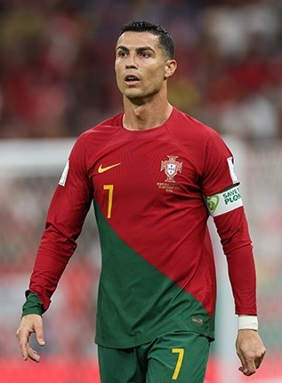
Ronaldo began his senior career with Sporting CP, before signing with Manchester United in 2003, winning the FA Cup in his first season. He would also go on to win three consecutive Premier League titles, the Champions League and the FIFA Club World Cup; at age 23, he won his first Ballon d'Or. Ronaldo was the subject of the then-most expensive association football transfer when he signed for Real Madrid in 2009 in a transfer worth €94 million (£80 million). He became a key contributor and formed an attacking trio with Karim Benzema and Gareth Bale which was integral to the team winning four Champions League wins from 2014 to 2018, including La Décima. During this period, he won back-to-back Ballons d'Or in 2013 and 2014, and again in 2016 and 2017, and was runner-up three times behind Lionel Messi, his perceived career rival. He also became the club's all-time top goalscorer and the all-time top scorer in the Champions League, and finished as the competition's top scorer for six consecutive seasons between 2012 and 2018. With Real, Ronaldo won two La Liga titles, two Copas del Rey, four Champions Leagues, three UEFA Super Cups and three Club World Cups. In 2018, he signed for Juventus in a transfer worth an initial €100 million (£88 million), the most expensive transfer for an Italian club and for a player over 30 years old. He won two Serie A titles, two Supercoppa Italiana trophies and a Coppa Italia, became the inaugural Serie A Most Valuable Player and became the first footballer to finish as top scorer in the English, Spanish and Italian leagues. He returned to Manchester United in 2021, finishing his only full season as the club's top scorer, before his contract was terminated in 2022. In 2023, he signed for Al Nassr.
Ronaldo made his international debut for Portugal in 2003 at the age of 18 and has since earned over 190 caps, making him Portugal's most-capped player. With more than 100 goals at international level, he is also the all-time top goalscorer. Ronaldo has played in and scored at 11 major tournaments; he scored his first international goal at Euro 2004, where he helped Portugal reach the final. He assumed captaincy of the national team in July 2008. In 2015, Ronaldo was named the best Portuguese player of all time by the Portuguese Football Federation. The following year, he led Portugal to their first major tournament title at Euro 2016, and received the Silver Boot as the second-highest goalscorer of the tournament. This achievement would see him receive his fourth Ballon d'Or. He also led them to victory in the inaugural UEFA Nations League in 2019, receiving the top scorer award in the finals, and later received the Golden Boot as top scorer of Euro 2020.
One of the world's most marketable and famous athletes, Ronaldo was ranked the world's highest-paid athlete by Forbes in 2016 and 2017 and the world's most famous athlete by ESPN from 2016 to 2019. Time included him on their list of the 100 most influential people in the world in 2014. He is the first footballer and the third sportsman to earn US$1 billion in his career.
Cristiano Ronaldo dos Santos Aveiro was born on 5 February 1985 in the São Pedro parish of Funchal, the capital of the Portuguese island of Madeira, and grew up in the nearby parish of Santo António.[8][9] He is the fourth and youngest child of Maria Dolores dos Santos Viveiros da Aveiro, a cook, and José Dinis Aveiro, a municipal gardener and part-time kit man.[10] His great-grandmother on his father's side, Isabel da Piedade, was from the island of São Vicente, Cape Verde.[11] He has one older brother, Hugo, and two older sisters, Elma and Liliana Cátia "Katia".[12] His mother revealed that she wanted to abort him due to poverty, his father's alcoholism, and having too many children already, but her doctor refused to perform the procedure,[13][14] as abortions were illegal in Portugal at that time.[15] Ronaldo grew up in an impoverished Catholic Christian home, sharing a room with all his siblings.[16]
As a child, Ronaldo played for Andorinha from 1992 to 1995,[17] where his father was the kit man,[10] and later spent two years with Nacional. In 1997, aged 12, he went on a three-day trial with Sporting CP, who signed him for a fee of £1,500.[18] He subsequently moved from Madeira to Alcochete, near Lisbon, to join Sporting's youth academy.[18] By age 14, Ronaldo believed he had the ability to play semi-professionally and agreed with his mother to cease his education to focus entirely on football.[19] With a troubled life as a student[20] and living in Lisbon area away from his Madeiran family, he didn't complete schooling beyond the 6th grade.[21][22] While popular with other students at school, he had been expelled after throwing a chair at his teacher, who he said had "disrespected" him.[19] One year later, he was diagnosed with tachycardia, a condition that could have forced him to give up playing football.[23] Ronaldo underwent heart surgery where a laser was used to cauterise multiple cardiac pathways into one, altering his resting heart rate.[24] He was discharged from the hospital hours after the procedure and resumed training a few days later.[25]
At age 16, Ronaldo was promoted from Sporting's youth team by first-team manager László Bölöni, who was impressed with his dribbling.[26] He subsequently became the first player to play for the club's under-16, under-17 and under-18 teams, the B team and the first team, all within a single season.[18] A year later, on 29 September 2002, Ronaldo made his debut in the Primeira Liga, against Braga and on 7 October, he scored two goals against Moreirense in their 3–0 win.[27] Over the course of the 2002–03 season, his representatives suggested the player to Liverpool manager Gérard Houllier and Barcelona president Joan Laporta.[28] Manager Arsène Wenger, who was interested in signing Ronaldo, met with him at Arsenal's stadium in November to discuss a possible transfer.[29]
Manchester United manager Alex Ferguson was determined to acquire Ronaldo on a permanent move urgently, after Sporting defeated United 3–1 at the inauguration of the Estádio José Alvalade in August 2003. Initially, United had planned to sign Ronaldo and loan him back to Sporting for a year.[30] Having been impressed by him, the United players urged Ferguson to sign him. After the game, Ferguson agreed to pay Sporting £12.24 million[30] for what he considered to be "one of the most exciting young players" he had ever seen.[31] A decade after his departure from the club, in April 2013, Sporting honoured Ronaldo by selecting him to become their 100,000th member.[32]
Ronaldo's move to Manchester United was completed on 12 August 2003, too late for the 2003 FA Community Shield but in time for their game against Bolton Wanderers on the opening day of the 2003–04 season, and made him the first Portuguese player to sign for the club.[34] His transfer fee made him, at the time, the most expensive teenager in English football history.[35] Although he requested the number 28, his number at Sporting, he received the squad number 7 shirt, which had previously been worn by such United players as George Best, Eric Cantona and David Beckham.[36] Wearing the number 7 became an extra source of motivation for Ronaldo.[37] A key element in his development during his time in England proved to be Ferguson, of whom he later said: "He's been my father in sport, one of the most important and influential factors in my career."[38]
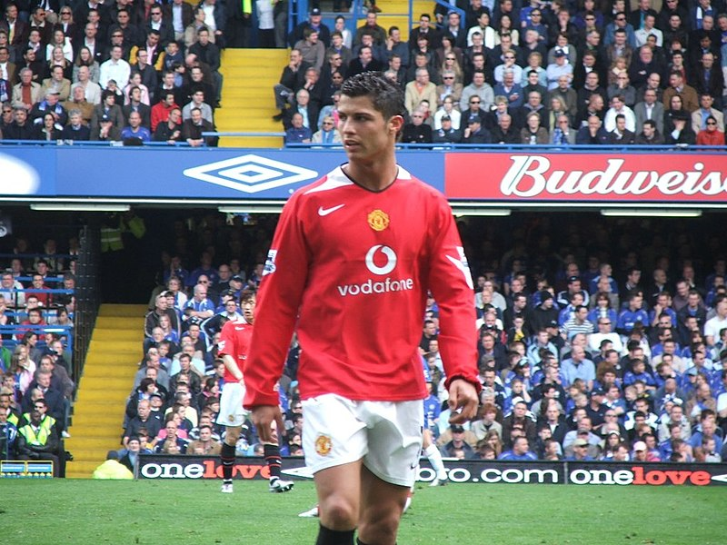
Ronaldo made his debut as a substitute in a 4–0 home win over Bolton Wanderers in the Premier League on 16 August 2003, and received a standing ovation when he came on for Nicky Butt.[39] His performance earned praise from Best, who hailed it as "undoubtedly the most exciting debut" he had ever seen.[33] Ronaldo scored his first goal for Manchester United with a free-kick in a 3–0 win over Portsmouth on 1 November.[40] Three more league goals followed in the second half of the campaign,[41] the last of which came against Aston Villa on the final day of the season, a match in which he also received the first red card of his career.[42] Ronaldo ended his first season in English football by scoring the opening goal in United's 3–0 win over Millwall in the 2004 FA Cup Final, earning his first trophy.[43] BBC pundit Alan Hansen described him as the star of the final.[44] The British press had been critical of Ronaldo during the season for his "elaborate" step-overs in trying to beat opponents,[45] but teammate Gary Neville said he was "not a show pony, but the real thing", and predicted he would become a world-class
Ronaldo scored United's 1,000th Premier League goal on 29 October 2004, their only goal in a 4–1 loss to Middlesbrough.[47] A few weeks later, he signed a new contract with the club that extended his previous deal by two years to 2010.[48] At the start of 2005, Ronaldo played two of his best matches of the 2004–05 season, producing a goal and an assist against Aston Villa and scoring twice against rivals Arsenal.[49][50] He played the full 120 minutes of the 2005 FA Cup Final against Arsenal, which ended in a goalless draw; although Ronaldo scored his attempt in the penalty shoot-out, United lost 5–4.[51] Ronaldo won his second trophy in English football, the Football League Cup, after scoring the third goal in United's 4–0 final win over Wigan Athletic.[52]
During his third season in England, Ronaldo was involved in several incidents. He had a one-match ban imposed on him by UEFA for a "one-fingered gesture" towards Benfica fans,[53] and was sent off in the Manchester derby (a 3–1 defeat) for kicking Manchester City's former United player Andy Cole.[54] Ronaldo clashed with a teammate, striker Ruud van Nistelrooy, who took offence at the winger's showboating style of play.[55] Following the 2006 FIFA World Cup, in which he was involved in an incident where club teammate Wayne Rooney was sent off,[56] Ronaldo publicly asked for a transfer, lamenting the lack of support he felt he had received from the club over the incident.[57] United denied the possibility of him leaving the club.[58]
Although his World Cup altercation with Rooney resulted in Ronaldo being booed throughout the 2006–07 season,[59] it proved to be his breakout year, as he broke the 20-goal barrier for the first time and won his first Premier League title. An important factor in this success was his one-to-one training by first-team coach René Meulensteen, who taught him to make himself more unpredictable, improve his teamwork, call for the ball and capitalise on goalscoring opportunities rather than waiting for the chance to score the aesthetically pleasing goals for which he was already known.[60] He scored three consecutive braces at the end of December, against Aston Villa (a win that put United on top of the league), Wigan and Reading.[61][62][63] Ronaldo was named the Premier League Player of the Month in November and December, becoming only the third player to receive consecutive honours.[64]
At the quarter-final stage of the 2006–07 UEFA Champions League, Ronaldo scored his first goals in his 30th match in the competition,[65] scoring twice in a 7–1 win over Roma.[66] He subsequently scored four minutes into the first semi-final leg against Milan, which ended in a 3–2 win,[67] but was marked out of the second leg as United lost 3–0 at the San Siro.[68] He also helped United reach the 2007 FA Cup Final, but the final against Chelsea ended in a 1–0 defeat.[69] Ronaldo scored the only goal in the Manchester derby on 5 May (his 50th goal for the club), as United won their first league title in four years.[70] As a result of his performances, he amassed a host of personal awards for the season. He won the Professional Footballers' Association's Player's Player, Fans' Player and Young Player of the Year awards, as well as the Football Writers' Association's Footballer of the Year award,[71][72] becoming the first player to win all four main PFA and FWA honours.[73] His wages were raised to £120,000 a week as part of a five-year contract extension.[74] Ronaldo was named runner-up to Kaká for the 2007 Ballon d'Or,[75] and came third, behind Kaká and Lionel Messi, in the running for the 2007 FIFA World Player of the Year award.[76]
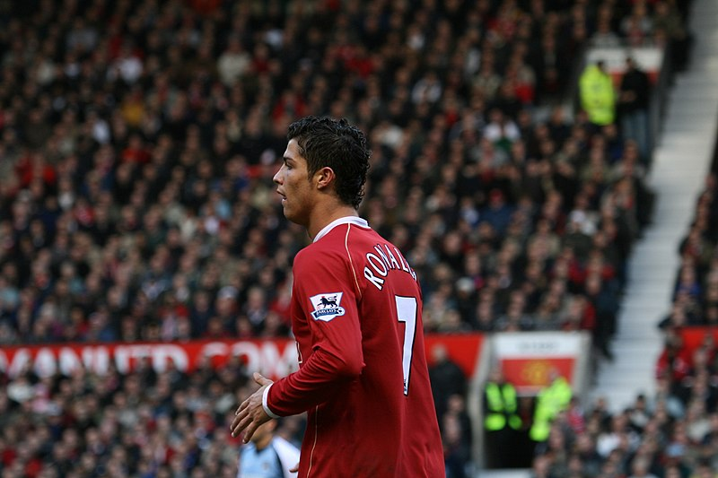
Ronaldo scored his first hat-trick for United in a 6–0 win against Newcastle United on 12 January 2008, which put United top of the league table.[77] On 19 March, he captained United for the first time in a home win over Bolton and scored both goals in a 2–0 win.[78] His second goal was his 33rd of the campaign, surpassing George Best's total of 32 goals in the 1967–68 season, setting the club's new single-season record by a midfielder.[79] His 31 league goals earned him the Premier League Golden Boot,[80] as well as the European Golden Shoe, which made him the first winger to win the latter award.[81] He additionally received the PFA Players' Player of the Year and FWA Footballer of the Year awards for the second consecutive season.[82][83] In the knockout stage of the Champions League, Ronaldo scored the decisive goal against Lyon to help United advance to the quarter-finals 2–1 on aggregate;[84] while playing as a striker, he scored with a header in the 3–0 aggregate win over Roma.[85] United reached the final against Chelsea in Moscow on 21 May, where, despite his opening goal being negated by an equaliser and his penalty kick being saved in the shoot-out,[86] United emerged victorious 1–1, winning the penalties 6–5.[87][88] As the Champions League top scorer, Ronaldo was named the UEFA Club Footballer of the Year.[89]
Ronaldo scored a total of 42 goals in all competitions during the 2007–08 season, his most prolific campaign during his time in England. He missed three matches after headbutting a Portsmouth player at the start of the season, an experience he said taught him not to let opponents provoke him.[90] As rumours circulated of Ronaldo's interest in moving to Real Madrid, United filed a tampering complaint with governing body FIFA over Madrid's alleged pursuit of their player, but they declined to take action.[91] FIFA president Sepp Blatter asserted that the player should be allowed to leave his club, describing the situation as "modern slavery".[92] Despite Ronaldo publicly agreeing with Blatter,[93] he remained at United for another year.[94]
Ahead of the 2008–09 season, on 7 July, Ronaldo underwent ankle surgery,[95] which kept him out of action for 10 weeks.[96] Following his return, he scored his 100th goal in all competitions for United with the first of two free kicks in a 5–0 win against Stoke City on 15 November,[97] which meant he had now scored against all 19 opposition teams in the Premier League at the time.[98] At the close of 2008, Ronaldo helped United win the 2008 FIFA Club World Cup in Japan,[99] assisting the final-winning goal against Liga de Quito and winning the Silver Ball in the process.[100] With his 2008 Ballon d'Or and 2008 FIFA World Player of the Year, Ronaldo became United's first Ballon d'Or winner since Best in 1968,[101] and the first Premier League player to be named the FIFA World Player of the Year.[102]
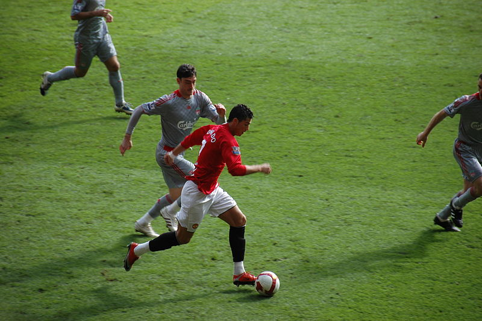
His match-winning goal in the second leg against Porto, a 40-yard strike, earned him the inaugural FIFA Puskás Award, presented by FIFA in recognition of the best goal of the year;[103] he later called it the best goal he had ever scored.[104] United advanced to the final in Rome,[105] where he made little impact in United's 2–0 defeat to Barcelona.[106] Ronaldo ended his time in England with nine trophies, as United claimed their third successive league title and a Football League Cup.[107][108] He finished the campaign with 26 goals in all competitions, 16 goals fewer than the previous season, in four more appearances.[109] His final goal for United came on 10 May 2009 with a free kick in the Manchester derby at Old Trafford.[110]
Ahead of the 2009–10 season, Ronaldo joined Real Madrid for a world record transfer fee at the time of £80 million (€94 million).[111] His contract, which ran until 2015, was worth €11 million per year and contained a €1 billion buy-out clause.[112] At least 80,000 fans attended his presentation at the Santiago Bernabéu, surpassing the 25-year record of 75,000 fans who had welcomed Diego Maradona at Napoli.[113] Since club captain Raúl already wore the number 7 (the number Ronaldo wore at United), Ronaldo received the number 9 shirt,[114] which was presented to him by former Madrid player Alfredo Di Stéfano.[115]
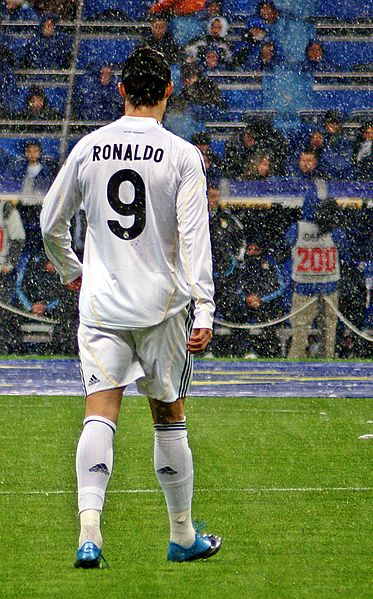
Ronaldo made his La Liga debut against Deportivo La Coruña on 29 August, scoring a penalty in a 3–2 home win.[116] He scored in each of his first four league games, the first Madrid player to do so.[117] His first Champions League goals for the club followed with two free kicks in the first group match against Zürich.[118] His strong start to the season was interrupted when he suffered an ankle injury in October while on international duty, which kept him sidelined for seven weeks.[119][120] A week after his return, he received his first red card in Spain in a match against Almería.[121] Midway through the season, Ronaldo finished second in the 2009 Ballon d'Or and the 2009 FIFA World Player of the Year awards, behind Messi. He finished the season with 33 goals in all competitions, including a hat-trick in a 4–1 win against Mallorca on 5 May 2010, his first in La Liga,[122][123] and became Real Madrid's highest goalscorer that season. Although Ronaldo helped amass a club record 96 points in the league, he did not win a trophy in his first season.[124][125]
Following Raúl's departure, Ronaldo was given the number 7 shirt for Madrid before the 2010–11 season.[126] His subsequent return to his Ballon d'Or-winning form was epitomised when, for the first time in his career, he scored four goals in a single match during a 6–1 rout against Racing Santander on 23 October.[127] Ronaldo subsequently scored further hat-tricks against Athletic Bilbao, Levante, Villarreal and Málaga.[128][129][130] Despite his performances, he did not make the top three in the inaugural 2010 FIFA Ballon d'Or.[131] During a historic series of four Clásicos against rivals Barcelona in April 2011, Ronaldo scored twice to equal his personal record of 42 goals in all competitions. Though he failed to score in either leg of the Champions League semi-finals as Madrid were eliminated, he equalised from the penalty spot in the return league game and scored the match-winning goal in the 103rd minute of the 2011 Copa del Rey Final, winning his first trophy in Spain.[132][133] His two goals in the last match of the season against Almería made him the first player in La Liga to score 40 goals.[134] In addition to the Pichichi Trophy, Ronaldo won the European Golden Shoe for a second time, becoming the first player to win the award in different leagues.[135]
During the following season, Ronaldo achieved a new personal best of 60 goals in all competitions.[136] He finished as runner-up to Messi for the 2011 FIFA Ballon d'Or, after scoring hat-tricks against Real Zaragoza, Rayo Vallecano, Málaga, Osasuna and Sevilla, the last of which put Madrid on top of the league by the season's midway point.[137][138][139] Ronaldo found greater team success in the league, helping Madrid win their first league title in four years with a record 100 points. Following a hat-trick against Levante as Madrid further increased their lead over Barcelona,[140] he scored his 100th league goal for Madrid in a 5–1 win over Real Sociedad on 24 March 2012, a milestone he reached in just 92 matches across three seasons, breaking the previous club record held by Ferenc Puskás.[141] Another hat-trick in the Madrid derby against Atlético Madrid brought his total to 40 league goals, equalling his record of the previous season.[142] His final league goal of the season, against Mallorca, took his total to 46 goals, four short of the new record set by Messi,[143] though he became the first player to score against all 19 opposition teams in a single La Liga season.[144]
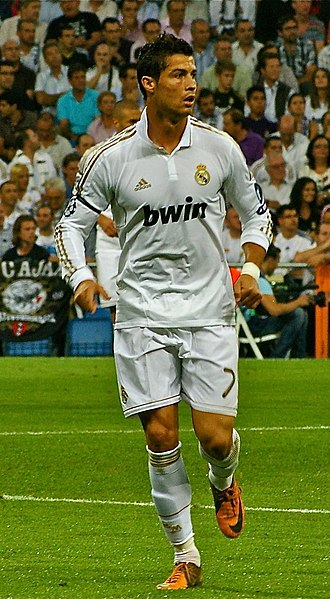
Ronaldo began the 2012–13 season by lifting the 2012 Supercopa de España, his third trophy in Spain. With a goal in each leg, he helped Madrid win the Spanish Super Cup on away goals following a 4–4 aggregate draw against Barcelona.[145] Although Ronaldo publicly commented that he was unhappy with a "professional issue" within the club, prompted by his refusal to celebrate his 150th goal for Madrid,[146] his goalscoring rate did not suffer. After netting a hat-trick, including two penalties, against Deportivo, he scored his first hat-trick in the Champions League in a 4–1 win over Ajax.[147] Four days later, he became the first player to score in six successive Clásicos when he hit a brace in a 2–2 draw at Camp Nou.[148] His performances again saw Ronaldo voted second in the running for the 2012 FIFA Ballon d'Or, behind four-time winner Messi.[149]
Following the 2012–13 winter break, Ronaldo captained Madrid for the first time in an official match, scoring twice to lift 10-man Madrid to a 4–3 win over Sociedad on 6 January.[150] He subsequently became the first non-Spanish player in 60 years to captain Madrid in El Clasico on 30 January, a match which also marked his 500th club appearance.[151] Three days prior, he had scored his 300th club goal as part of a perfect hat-trick against Getafe.[152] He scored his 200th goal for Madrid on 8 May in a 6–2 win against Málaga, reaching the landmark in 197 games.[153] He helped Madrid reach the 2013 Copa del Rey Final by scoring twice in El Clásico, which marked the sixth successive match at Camp Nou in which he had scored,[154] a club record.[145] In the final, he headed the opening goal of an eventual 2–1 extra time defeat to Atlético, but was shown a red card for violent conduct.[155] In the first knockout round of the Champions League, Ronaldo faced his former club Manchester United for the first time. After scoring the equaliser in a 1–1 draw at home,[156] he scored the winning goal in a 2–1 win on his first return to Old Trafford.[157] He did not celebrate scoring against his former club as a mark of respect.[158] After scoring three goals against Galatasaray in the quarters, he scored Madrid's only goal in the 4–1 away defeat to Borussia Dortmund in the semi-finals and Real were eliminated at the semi-final stage for the third consecutive year despite a 2–0 win in the second leg.[159]
At the start of the 2013–14 season, Ronaldo signed a new contract that extended his stay by three years to 2018, with a salary of €17 million net, making him briefly the highest-paid player in football.[160] He was joined at the club by winger Gareth Bale, whose world record transfer fee of €100 million surpassed the fee Madrid had paid for Ronaldo four years prior.[161] Together with striker Karim Benzema, they formed an attacking trio popularly dubbed "BBC", an acronym of Bale, Benzema and Cristiano, and a play on the name of the British public service broadcaster, the British Broadcasting Corporation (BBC).[162] By late November, Ronaldo had scored 32 goals from 22 matches for both club and country, including hat-tricks against Galatasaray, Sevilla, Real Sociedad, Northern Ireland, and Sweden.[163][164][165] He ended 2013 with 69 goals in 59 appearances, his highest year-end goal tally.[166] He received the 2013 FIFA Ballon d'Or, an amalgamation of the Ballon d'Or and the FIFA World Player of the Year award, for the first time in his career.[167]
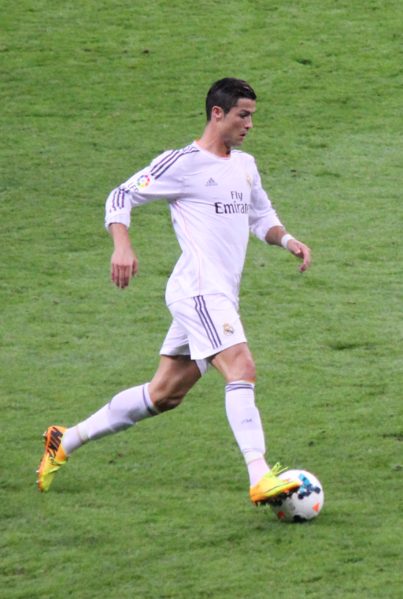
Concurrently with his individual achievements, Ronaldo enjoyed his greatest team success in Spain to date, as he helped Madrid win La Décima, their tenth European Cup. His goal in a 3–0 home win over Dortmund (his 100th Champions League match) took his total for the season to 14 goals, equalling the record Messi had set two years before.[168] After hitting a brace in a 4–0 defeat of Bayern Munich at the Allianz Arena,[169] he scored from the penalty spot in the 120th minute of the 4–1 final win over Atlético, becoming the first player to score in two European Cup finals for two different winning teams.[170] His overall performance in the final was subdued as a result of patellar tendinitis and related hamstring problems, which had plagued him in the last months of the campaign. Ronaldo played the final against medical advice, later commenting: "In your life you do not win without sacrifices and you must take risks".[171] As the competition's top goalscorer for the third time, with a record 17 goals,[172] he was named the UEFA Best Player in Europe.[173]
In the Copa del Rey, Ronaldo helped Madrid reach the final by scoring two penalties against Atlético at the Vicente Calderón,[174] the first of which meant he had now scored in every single minute of a 90-minute football match.[175] His continued issues with his knee and thigh caused him to miss the final, where Madrid defeated Barcelona 2–1 to claim the trophy.[176] Ronaldo scored 31 goals in 30 league games, which earned him the Pichichi and the European Golden Shoe, receiving the latter award jointly with Liverpool striker Luis Suárez.[177] Among his haul was his 400th career goal, in 653 appearances for club and country, which came with a brace against Celta Vigo on 6 January; he dedicated his goals to compatriot Eusébio, who had died two days before.[178] A last-minute, back-heeled volley scored against Valencia on 4 May (his 50th goal in all competitions) was recognised as the best goal of the season by the Liga Nacional de Fútbol Profesional,[179] which additionally named Ronaldo the Best Player in La Liga.[180]
the Copa del Rey, Ronaldo helped Madrid reach the final by scoring two penalties against Atlético at the Vicente Calderón,[174] the first of which meant he had now scored in every single minute of a 90-minute football match.[175] His continued issues with his knee and thigh caused him to miss the final, where Madrid defeated Barcelona 2–1 to claim the trophy.[176] Ronaldo scored 31 goals in 30 league games, which earned him the Pichichi and the European Golden Shoe, receiving the latter award jointly with Liverpool striker Luis Suárez.[177] Among his haul was his 400th career goal, in 653 appearances for club and country, which came with a brace against Celta Vigo on 6 January; he dedicated his goals to compatriot Eusébio, who had died two days before.[178] A last-minute, back-heeled volley scored against Valencia on 4 May (his 50th goal in all competitions) was recognised as the best goal of the season by the Liga Nacional de Fútbol Profesional,[179] which additionally named Ronaldo the Best Player in La Liga.[180]
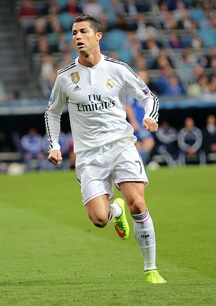
During the 2014–15 season, Ronaldo set a new personal best of 61 goals, starting with both goals in Madrid's 2–0 win over Sevilla in the UEFA Super Cup.[181] He subsequently achieved his best-ever goalscoring start to a league campaign, with 15 goals in the first eight rounds.[182] His record 23rd La Liga hat-trick, scored against Celta Vigo on 6 December, made him the fastest player to reach 200 goals in La Liga, reaching the milestone in 178th matches.[182][183] After winning the 2014 FIFA Club World Cup,[184] Ronaldo received the 2014 Ballon d'Or,[185] joining Johan Cruyff, Michel Platini and Marco van Basten as a three-time recipient.[186] Madrid finished in second place in La Liga and exited at the semi-final stage in the Champions League.[187] In the latter competition, Ronaldo extended his run of scoring away to a record 12 matches with his strike in a 2–0 win against Schalke 04.[188] He scored both of his side's goals in the semi-finals against Juventus, where Madrid were eliminated 3–2 on aggregate.[189] With 10 goals, he finished as top scorer for a third consecutive season, alongside Messi and Neymar.[190] On 5 April, he scored five goals in a game for the first time in his career, including an eight-minute hat-trick, in a 9–1 rout of Granada.[191] His 300th goal for his club followed three days later in a 2–0 win against Rayo Vallecano.[192] Subsequent hat-tricks against Sevilla, Espanyol and Getafe took his number of hat-tricks for Madrid to 31, surpassing Di Stéfano's club record of 28.[181] He finished the season with 48 goals, winning a second consecutive Pichichi and the European Golden Shoe for a record fourth time.[181]
At the start of his seventh season at Madrid, the 2015–16 campaign, Ronaldo became the club's all-time top scorer, first in the league and then in all competitions. His five-goal haul in a 6–0 away win over Espanyol on 12 September took his tally in La Liga to 230 goals in 203 games, surpassing the club's previous record holder, Raúl.[193] A month later, on 17 October, he again surpassed Raúl when he scored the second goal in a 3–0 defeat of Levante at the Bernabéu to take his overall total for the club to 324 goals.[note 4] Ronaldo also became the all-time top scorer in the Champions League with a hat-trick in the first group match against Shakhtar Donetsk, having finished the previous season level with Messi on 77 goals.[195] Two goals against Malmö FF in a 2–0 away win on 30 September saw him reach the milestone of 500 career goals for club and country.[196] He subsequently became the first player to score double figures in the competition's group stage, setting the record at 11 goals, including another four-goal haul against Malmö.[197]
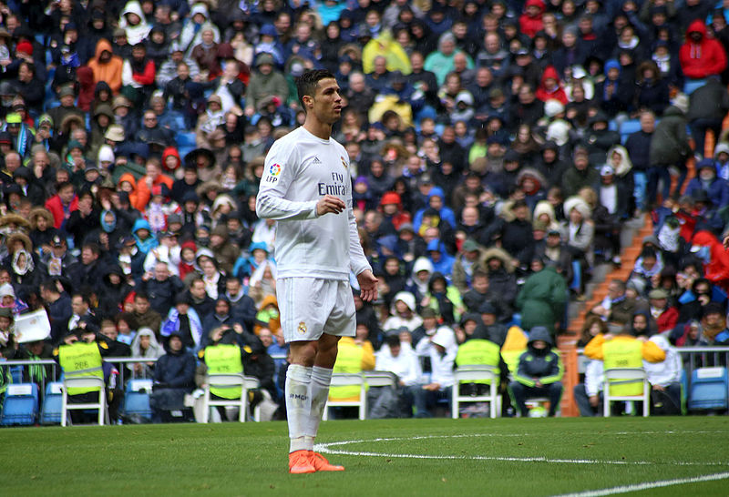
Ronaldo's four goals in a 7–1 home win over Celta de Vigo on 5 March 2016 took his total to 252 goals in La Liga, becoming the competition's second-highest scorer in history behind Messi.[198] He scored a hat-trick against VfL Wolfsburg to send his club into the Champions League semi-finals.[199] The treble took his tally in the competition to 16 goals, making him the top scorer for the fourth consecutive season and the fifth overall.[200] Suffering apparent fitness issues, Ronaldo gave a poorly-received performance in the final against Atlético, in a repeat of the 2014 final, though his penalty in the subsequent shoot-out secured Madrid's 11th victory.[201] For the sixth successive year, he ended the season having scored over 50 goals across all competitions.[201] For his efforts during the season, he received the UEFA Best Player in Europe Award for a second time.[202]
Ronaldo missed Madrid's first three matches of the 2016–17 season, including the 2016 UEFA Super Cup against Sevilla, as he continued to rehabilitate the knee injury he suffered against France in the Euro 2016 final.[203] On 15 September, he did not celebrate his late free kick equaliser against Sporting CP in the Champions League, with Ronaldo stating post match that "they made me who I am".[204] On 7 November, his contract was updated for the second time and extended by three years to 2021.[205] On 19 November, he scored a hat-trick in a 3–0 away win against Atlético, making him the all-time top scorer in the Madrid derby with 18 goals.[206] On 15 December, Ronaldo scored his 500th club career goal in the 2–0 win over Club América in the semi-finals of the 2016 FIFA Club World Cup.[207] He then scored a hat-trick in the 4–2 win over Japanese club Kashima Antlers in the final.[208] Ronaldo finished the tournament as top scorer with four goals and was also named player of the tournament.[209] He won the 2016 Ballon d'Or, his fourth, and the inaugural 2016 The Best FIFA Men's Player, a revival of the former FIFA World Player of the Year, largely owing to his success with Portugal in winning Euro 2016.[210]
In the 2016–17 UEFA Champions League quarter-finals against Bayern in April, Ronaldo scored both goals in a 2–1 away win which saw him make history by becoming the first player to reach 100 goals in UEFA club competition.[211] In the second leg of the quarter-finals, Ronaldo scored a 'perfect' hat-trick and reached his 100th Champions League goal, becoming the first player to do so as Madrid again defeated Bayern 4–2 after extra-time.[212] On 2 May, Ronaldo scored another hat-trick as Madrid defeated Atlético 3–0 in the Champions League semi-final first leg. On 17 May, Ronaldo overtook Jimmy Greaves as the all-time top scorer in the top five European leagues, scoring twice against Celta de Vigo.[213] He finished the season with 42 goals in all competitions as he helped Madrid to win their first La Liga title since 2012.[214] In the Champions League Final, Ronaldo scored two goals in a 4–1 victory over Juventus to take him to 12 goals for the season, making him the competition's top goalscorer for the fifth straight season (sixth overall), as well as the first player to score in three finals in the Champions League era; the second goal was the 600th of his senior career.[215] Madrid also became the first team to win back-to-back finals in the Champions League era.[216]
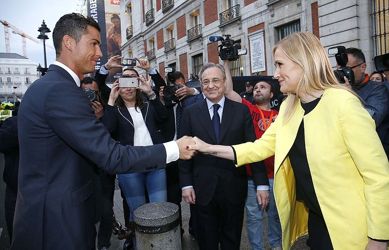
At the start of the 2017–18 season, Ronaldo scored Madrid's second goal in the 80th minute of a 3–1 win over Barcelona in the first leg of the 2017 Supercopa de España at Camp Nou; however, he was sent off two minutes later and missed the second leg.[217] On 23 October, his performances throughout 2017 saw him awarded The Best FIFA Men's Player award for the second consecutive year.[218] On 6 December, he became the first player to score in all six Champions League group stage matches with a curling strike at home to Dortmund.[219] A day later, Ronaldo won the 2017 Ballon d'Or, receiving his fifth-time award on the Eiffel Tower in Paris.[220] On 16 December, he scored a free kick winner, as Madrid won their second Club World Cup in a row by beating Grêmio in the final.[221] On 3 March 2018, he scored two goals in a 3–1 home win over Getafe, his first being his 300th La Liga goal in his 286th appearance, making him the fastest player to reach this landmark and only the second player to do so after Messi.[222] On 18 March, he reached his 50th career hat-trick, scoring four goals in a 6–3 win against Girona.[223]
On 3 April, Ronaldo scored the first two goals in a 3–0 away win against Juventus in the quarter-finals of the 2017–18 UEFA Champions League, with his second goal being an acrobatic bicycle kick. Described as a "PlayStation goal" by Juventus defender Andrea Barzagli, with Ronaldo's foot approximately 7 ft 7 in (2.31 m) off the ground, it garnered him a standing ovation from the opposing fans in the stadium as well as a plethora of plaudits from peers, pundits and coaches.[224] On 11 April, he scored in the second leg at home to Juventus, a 98th-minute injury time penalty in a 3–1 defeat, meaning Madrid advanced 4–3 on aggregate.[225] It was his tenth goal against Juventus, a Champions League record against a single club.[226] In the final on 26 May, Madrid defeated Liverpool 3–1, winning Ronaldo his fifth Champions League title, the first player to do so.[227] He finished as the top scorer of the tournament for the sixth consecutive season with 15 goals.[228] After the final, Ronaldo referred to his time with Madrid in the past tense, sparking speculation that he could leave the club.[229]
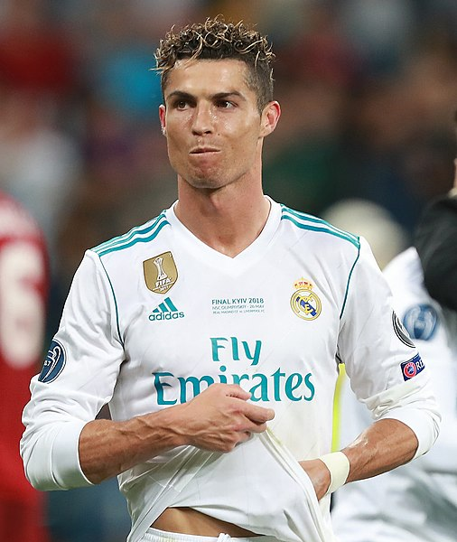
Despite months of negotiation to sign a new Real Madrid contract,[230] on 10 July 2018, Ronaldo signed a four-year contract with Italian club Juventus after completing a €100 million transfer, which included an additional €12 million in other fees and solidarity contributions to Ronaldo's youth clubs.[231] The transfer was the highest ever for a player over 30 years old,[232] and the highest paid by an Italian club.[233] Upon signing, Ronaldo cited his need for a new challenge as his rationale for departing Madrid,[234] but later attributed the transfer to the lack of support he felt was shown by club president Florentino Pérez.[235]
On 18 August, Ronaldo made his debut in a 3–2 away win against Chievo Verona.[236] On 16 September, Ronaldo scored his first two goals for Juventus in his fourth appearance in a 2–1 home win over Sassuolo in Serie A; his second was the 400th league goal of his career.[237] On 19 September, in his first Champions League match for Juventus, against Valencia, he was sent off in the 29th minute for "violent conduct", his first red card in 154 tournament appearances.[238] Ronaldo became the first player in history to win 100 Champions League matches, setting up Mario Mandžukić's winner in a 1–0 home win over Valencia, which sealed Juventus's passage to the knock-out stages of the competition.[239] In December, he scored his tenth league goal of the season, from the penalty spot, netting the final goal in a 3–0 away win over Fiorentina.[240] After placing second in both the UEFA Men's Player of the Year and The Best FIFA Men's Player for the first time in three years, behind Luka Modrić, Ronaldo performances in 2018 also saw him voted runner-up for the 2018 Ballon d'Or, finishing once again behind his former teammate.[241] Ronaldo won his first trophy with the club on 16 January 2019, the 2018 Supercoppa Italiana, after he scored the only goal from a header against AC Milan.[242]
On 10 February, Ronaldo scored in a 3–0 win over Sassuolo, the ninth consecutive away game in which he had scored in the league, equalling Giuseppe Signori's single season Serie A record of most consecutive away games with at least one goal.[243] On 12 March, Ronaldo scored a hat-trick in a 3–0 home win against Atlético in the second leg of the Champions League round of 16, helping Juventus overcome a two-goal deficit to reach the quarter-finals.[244] The following month, he scored his 125th goal in the competition, opening the scoring in a 1–1 away draw in the quarter-final first leg against Ajax on 10 April.[245] In the second leg in Turin on 16 April, he scored the opening goal, but Juventus eventually lost the match 2–1 and were eliminated from the competition.[246] On 20 April, Ronaldo played in the scudetto clinching game against Fiorentina, as Juventus won their eighth successive title after a 2–1 home win, thereby becoming the first player to win league titles in England, Spain and Italy.[247] On 27 April, he scored his 600th club goal, the equaliser in a 1–1 away draw against Derby d'Italia rivals Inter Milan.[248] Ending his first Serie A campaign with 21 goals and 8 assists, Ronaldo won the inaugural Serie A award for Most Valuable Player.[249]
Ronaldo scored his first goal of the 2019–20 season in a 4–3 home league win over Napoli on 31 August 2019.[250] On 23 September, he came in 3rd place for the Best FIFA Men's Player Award.[251] On 1 October, he reached several milestones in Juventus's 3–0 Champions League group stage win over Bayer Leverkusen: he scored in a 14th consecutive season, equalling Raúl and Messi's record; he broke Iker Casillas' record for most Champions League wins of all time, and equalled Raúl's record of scoring against 33 different opponents.[252] On 6 November in a 2–1 away win against Lokomotiv Moscow, he equalled Paolo Maldini as the second-most capped player in UEFA club competitions with 174 appearances.[253] On 18 December, Ronaldo leapt to a height of 8 ft 5 in (2.57 m), higher than the crossbar, to head the winning goal in a 2–1 away win against Sampdoria.[254] He scored his first Serie A hat-trick on 6 January 2020, in a 4–0 home win against Cagliari. His 56th career hat-trick, he became only the second player after Alexis Sánchez to score hat-tricks in the Premier League, La Liga and Serie A.[255] On 2 February, he scored twice from the penalty spot in a 3–0 home win over Fiorentina, equalling David Trezeguet's club record of scoring in nine consecutive league games,[256] and broke the record six days later by scoring in his tenth consecutive league game, a 2–1 away defeat to Hellas Verona.[257] On 22 February, Ronaldo scored for a record-equalling 11th consecutive league game, alongside Gabriel Batistuta and Fabio Quagliarella, in what was his 1,000th senior professional game, a 2–1 away win against SPAL.[258]
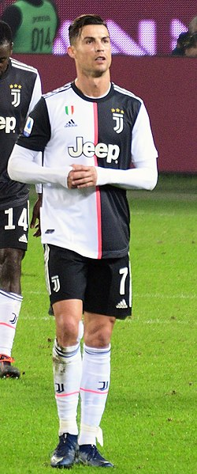
On 22 June, he scored a penalty in a 2–0 away win over Bologna, overtaking Rui Costa to become the highest scoring Portuguese player in Serie A history.[259] On 4 July, he scored his 25th league goal from a free kick in a 4–1 home win over rivals Torino, becoming the first Juventus player to achieve this milestone since Omar Sívori in 1961; the goal was also his first from a free kick with the club after 43 attempts.[260] On 20 July, Ronaldo scored twice in a 2–1 home win over Lazio; his first goal was his 50th in Serie A. He became the second-fastest player to reach this landmark, after Gunnar Nordahl, and the first player in history to reach 50 goals in the Premier League, La Liga and Serie A. With his brace, he also reached 30 league goals for the season, becoming just the third player (after Felice Borel in 1934 and John Hansen in 1952) in Juventus's history to reach that milestone in a season.[261][262] Moreover, he became the oldest player, at the age of 35 years and 166 days, to score over 30 goals in one of the five top European leagues since Ronnie Rooke with Arsenal in 1948.[263] On 26 July, Ronaldo scored the opening goal in a 2–0 home win over Sampdoria as Juventus were crowned Serie A champions for a ninth consecutive time.[264] He finished his second league campaign with 31 goals, making him the second-highest goalscorer in the league behind only European Golden Shoe winner Ciro Immobile, with 36 goals.[265][266] On 7 August, Ronaldo scored a brace in a 2–1 home win against Lyon in the second leg of the Champions League round of 16, which saw him finish the season with 37 goals in all competitions; the tally allowed him to break Borel's club record of 36 goals in a single season.[267] Despite the win, the tie finished 2–2 on aggregate and Juventus were eliminated from the competition on the away goals rule.[268]
On 20 September 2020, Ronaldo scored in Juventus's opening league match of the season, a 3–0 home win over Sampdoria.[269] On 1 November, having taken nearly three weeks to recover from COVID-19, he returned to action against Spezia; he came off the bench in the second half and scored within the first three minutes, before scoring a second goal from the penalty spot in an eventual 4–1 away win.[270] On 2 December, he scored a goal against Dynamo Kyiv in a Champions League group stage match, his 750th senior career goal.[271] Ronaldo played his 100th match in all competitions for Juventus on 13 December, scoring two penalties in a 3–1 away win over Genoa in the league to bring his goal tally to 79.[272] On 20 January 2021, Juventus won the 2020 Supercoppa Italiana after a 2–0 win against Napoli, with Ronaldo scoring the opening goal.[273] On 2 March, he scored a goal in a 3–0 win over Spezia in his 600th league match, to become the first player to score at least 20 goals in 12 consecutive seasons in the top five leagues of Europe.[274] On 14 March, he scored his 57th career hat-trick in a 3–1 away win over Cagliari.[275] On 12 May, Ronaldo scored a goal in a 3–1 away win over Sassuolo to reach his 100th goal for Juventus in all competitions on his 131st appearance, becoming the fastest Juventus player to achieve the feat.[276] With Juventus's victory in the 2021 Coppa Italia Final on 19 May, Ronaldo became the first player in history to win every major domestic trophy in England, Spain and Italy.[277] Ronaldo ended the season with 29 league goals, winning the Capocannoniere award for highest goalscorer and becoming the first footballer to finish as top scorer in the English, Spanish and Italian leagues.[278]
On 22 August, Ronaldo started the first game of the new season on the bench, coming on as a substitute for Álvaro Morata in a 2–2 draw against Udinese, scoring a goal that was ruled out by VAR.[279] Though manager Massimiliano Allegri confirmed it was his decision due to Ronaldo's fitness, it came amid reports Ronaldo would depart the club before the closure of the transfer window,[280] and Ronaldo would tell Allegri he had "no intention" of remaining a Juventus player.[281] On 26 August, Ronaldo and his agent Jorge Mendes reached a verbal agreement with Manchester City over personal terms,[282] but the club pulled out of the deal the following day due to the overall cost of the transfer.[283] On the same day, it was confirmed that City's rivals Manchester United, Ronaldo's former club, were in advanced talks to sign him,[284][285] while former manager Alex Ferguson and several ex-teammates had been in contact to persuade him to re-sign for United.[286][287]
n 27 August 2021, Manchester United announced they had reached an agreement with Juventus to re-sign Ronaldo, subject to agreement of personal terms, visa and medical.[288] The transfer was for an initial £12.85 million, with a two-year contract plus an optional year, and was confirmed on 31 August.[289] Ronaldo was given the number 7 shirt after Edinson Cavani agreed to switch to 21.[290] The first 24 hours of Ronaldo's shirt sales was reported to have broken the all-time record following a transfer, overtaking Messi after his move to Paris Saint-Germain.[291]
On 11 September, Ronaldo made his second debut at Old Trafford, scoring the opening two goals in a 4–1 league victory against Newcastle United.[292] On 29 September, he scored a last-minute winner in United's 2–1 victory at home to Villarreal in the Champions League, and overtook Iker Casillas as the player with the most appearances in the competition.[293] In the next Champions League fixture on 20 October, Ronaldo again scored a last minute winner, helping United overturn a two-goal deficit in a 3–2 home victory against Atalanta,[294] and scored both goals, including a last minute equalizer, in the reverse fixture against Atalanta on 2 November.[295] On 23 November, Ronaldo became the first player to score in five consecutive matches of a Champions League campaign for an English club, after opening United's 2–0 victory away against Villarreal, with his six goals being crucial to United's qualifying for the round of 16 as group winners.[296] On 2 December, Ronaldo netted two goals in a 3–2 home league win against Arsenal, which saw him surpass 800 career goals.[297]
The following month, after enduring a fractured relationship with his teammates and interim manager Ralf Rangnick, his performances and his team's declined during the season, with Ronaldo equalling his worst goalscoring run since 2010 during his time with Real Madrid, being two months without scoring a goal,[298] before scoring his first goal in the new year, opening United's 2–0 win home against Brighton & Hove Albion on 15 February 2022.[299] Following a hamstring injury, which saw him miss the Manchester derby against Manchester City, Ronaldo made his return from injury on 12 March, scoring a hat-trick in a 3–2 victory against Tottenham Hotspur, which saw him pass Josef Bican's record for goals scored in professional football with 807 career goals,[300] although the Football Association of the Czech Republic claimed that Bican had scored 821 career goals.[301] On 16 April, Ronaldo scored his 50th club hat-trick in a 3–2 win over Norwich City.[302] On 23 April, he scored his 100th Premier League goal in a 3–1 defeat to Arsenal.[303] After scoring in the following matches against Chelsea and Brentford, he was named the Premier League Player of the Month for April.[304]
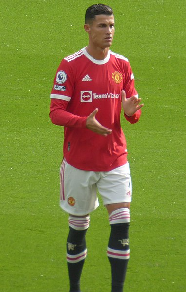
He finished the season with 24 goals in all competitions, 18 of those goals being in the Premier League, making him the third-highest goalscorer in the league behind Golden Boot winners Mohamed Salah and Son Heung-min, being named in the Premier League Team of the Year and the winner of United's Sir Matt Busby Player of the Year award, given to the club's best player from the previous season;[305][306] however, with United finishing in a disappointing sixth place and qualifying for the UEFA Europa League, Ronaldo went trophyless for the first time since 2010.[307]
After growing dissatisfaction with the direction of United on and off the field, Ronaldo missed the club's pre-season tour of Thailand and Australia due to family reasons, amid reports of his desire to leave to join a club competing in the Champions League, despite incoming manager Erik ten Hag insisting that he was not for sale and was part of the club's plans.[308] His agent Jorge Mendes began negotiating with various clubs for a transfer on loan or on a free transfer, including Bayern Munich, Paris Saint-Germain and Chelsea, with the latter club's new owner Todd Boehly being keen on a possible transfer.[309] However, due to his age, overall cost of a transfer and high wages demands, multiple European clubs rejected the opportunity to sign him, including Chelsea after their manager Thomas Tuchel did not approve his signing.[310]
Having failed to secure a transfer, Ronaldo lost his place in the starting lineup to Marcus Rashford and Anthony Martial, only featuring in Europa League matches. He scored his first goal in the competition aged 37, converting a penalty to make it 2–0 against Sheriff Tiraspol on 15 September.[311] On 2 October, Ronaldo was an unused substitute in United's 6–3 loss to Manchester City, with ten Hag saying that he refused to bring him on out of "respect for his big career".[312] On 9 October, Ronaldo came on as a substitute and scored his 700th career club goal in a 2–1 win against Everton.[313] Ten days later, Ronaldo refused to be brought on as a substitute during a home game against Tottenham and left the ground before the full-time whistle;[314][315] Ten Hag punished him by dropping him from the squad for an upcoming fixture with Chelsea, and made him train separately from the first team.[316][317] Following discussions with the manager, Ronaldo returned to training and started in United's home win over Sheriff on 27 October, scoring the third goal and ensuring United's qualification to the Europa League knockout stage.[318] Ten Hag named Ronaldo as captain for a 3–1 defeat to Aston Villa on 6 November, saying that Ronaldo was "an important part of the squad, we are happy with him and now he has to take even more of the leader role".[319] Ronaldo then missed United's following matches before the World Cup break, with Ten Hag saying that Ronaldo was ill.[320]
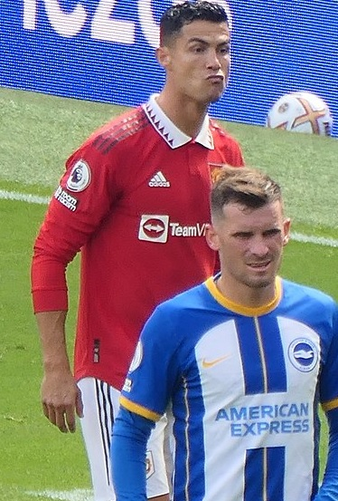
On 14 November, an interview with Piers Morgan was published, where Ronaldo said that he felt "betrayed" by Ten Hag and senior executives who wanted Ronaldo to leave the club, and accused the club of doubting him regarding the illness of his daughter that led him to miss pre-season, adding that he did not respect ten Hag "because he doesn't show respect for me", leading him to be disappointed with the communication of the club.[321] Ronaldo claimed that ten Hag deliberately provoked him by first leaving him on the bench against City, and then wanting to bring him on in the final moments against Tottenham, but added that he regretted his decision to leave early.[321] He also questioned the appointment of Rangnick the previous season as he was a "sporting director and not even a coach".[321][322] On the club itself, Ronaldo stated there was "no evolution" since the departure of former manager Alex Ferguson in 2013, despite expecting changes in "technology, infrastructure".[321][322] Ronaldo claimed that the Glazer family "did not care about the club" as he never spoke with them, and described United as a "marketing club".[321][322] Following the interview, which aired in two-parts on 16 and 17 November, United began seeking legal action over whether Ronaldo had breached his contract,[323] and were looking to terminate his contract.[324] On 22 November, Ronaldo's contract was terminated by mutual agreement with immediate effect.[325]
On 30 December 2022, Saudi club Al Nassr reached an agreement for Ronaldo to join the club effective 1 January 2023, signing a contract until 2025.[326] As reported by Fabrizio Romano of The Guardian, Ronaldo received the highest football salary in history, worth €200 million per year;[327][328] this included an annual guaranteed football salary of €90 million, with commercial and sponsorship deals included bringing his total annual salary to €200 million. He was also reportedly paid a signing-on bonus in the region of €100 million.[329] According to Romano, Ronaldo rejected a move to Major League Soccer club Sporting Kansas City to join Al Nassr.[330] Ronaldo was due to appear in a match against Al-Tai on 5 January 2023, but had to serve a two-match ban incurred while he was still at Manchester United for knocking a phone out of a 14-year-old Everton fan's hand after a 1–0 loss at Goodison Park in April 2022.[331]
On 19 January, Ronaldo played for the first time since transferring to Saudi Arabia, in an exhibition game featuring a combined team of Riyadh's Al Nassr and Al Hilal players against Paris Saint-Germain. Ronaldo scored twice in a 5–4 loss.[332] He made his debut for Al Nassr on 22 January, as club captain, playing the full 90 minutes of a 1–0 win over Al-Ettifaq,[333] and scored his first goal in a 2–2 draw against Al-Fateh by converting a last-minute penalty.[334] On 9 February, Ronaldo scored all four goals in a 4–0 win over Al Wehda, his first goal of the match being his 500th career league goal.[335] On 25 February, he scored his second hat-trick for the club, helping his side to a 3–0 away league victory against Damac.[336] Ronaldo was awarded the Player of the Month award for February after scoring eight goals and assisting twice.[337]
Ronaldo spent another season without winning the league title as Al Nassr finished second in the league in the 2022–23 season.[338]
| Personal information | |
|---|---|
| Full name | Cristiano Ronaldo dos Santos Aveiro[1] |
| Date of birth | 5 February 1985 (age 38)[1] |
| Place of birth | Funchal, Madeira, Portugal[1] |
| Height | 1.87 m (6 ft 2 in)[note 1] |
| Position(s) | Forward |
| Team information | |
|---|---|
| Current team | Al Nassr |
| Number | 7 |
| Youth career | |
|---|---|
| 1992–1995 | Andorinha |
| 1995–1997 | Nacional |
| 1997–2002 | Sporting CP |
| Senior career* | ||
|---|---|---|
| Years | Team | Apps (Gls) |
| 2002–2003 | Sporting CP B | 2(0) |
| 2002–2003 | Sporting CP | 25(3) |
| 2003–2009 | Manchester United | 196(84) |
| 2009–2018 | Real Madrid | 292(311) |
| 2018–2021 | Juventus | 98(81) |
| 2021–2022 | Manchester United | 40(19) |
| 2023– | Al Nassr | 16(14) |